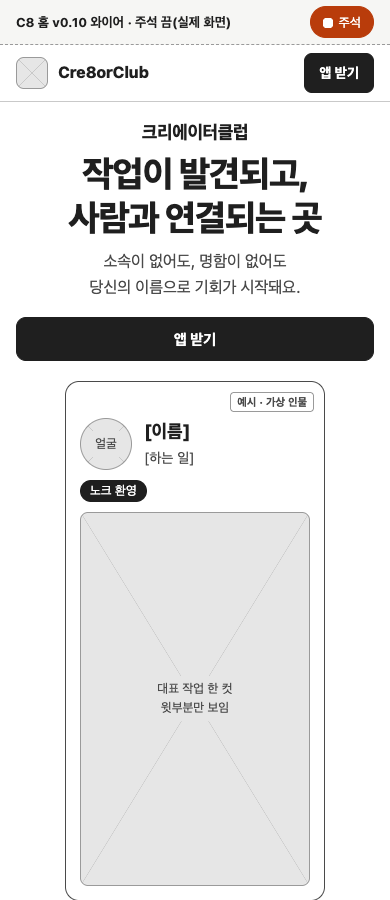

C8 서비스 홈 · 확정 모션 구현 · 2026. 10. 29
리스펙트 영상을 연결했어요.
대표 편 자료 확인이 남았어요.
홈 와이어 사본에서 승인된 리스펙트 녹화와 끝 장면 포스터를 볼 수 있어요. 대표 편은 원본 확인 전으로 표시했어요.

확인한 동작
- 토큰
- 확정 C안 여섯 값에서 CSS linear()·motion 물리 스프링·GSAP 이징을 만들었어요. 질량은 1이고 motion에는 duration·bounce를 넣지 않아요.
- 와이어
- 390·1440에서 일반 화면과 움직임 줄이기 화면 모두 가로 넘침 0·실행 오류 0이에요. 움직이지 않는 네 구간도 확인했어요.
- 영상 제어
- 실제 로컬 녹화로 1,200px 앞 불러오기·보일 때 재생·멈춤 유지·자동재생 차단 뒤 재시도·재생 취소 경합·화면 복귀를 확인했어요. 공개 미리보기에는 리스펙트 녹화와 끝 장면 포스터를 연결했어요. 대표 편은 원본 확인 전 표시를 유지해요.
- 대조
- 어절 시차 50ms, 자막 spatial.default+effects.fast, 엔딩 spatial.fast예요. CSS와 GSAP의 같은 시각 정규화 차이는 최대 0.000043예요. 화면상 이동량도 맞췄어요.
용량과 긴 프레임
- 리스펙트
- 원본 12.4초·5,211,765바이트 → 무음 H.264 360px·24fps 708,763바이트(0.71MB). 프레임 정렬 후 길이 12.417초예요. 1MB 목표 안이에요. 샐리가 이 압축 영상과 끝 장면 포스터의 공개 연결을 승인했어요.
- 대표 편
- 완성 영상 원본을 찾지 못해 미리보기 용량을 재지 못했어요. 대조용 자막 샘플을 대표 편으로 대체하지 않았어요.
- Chrome 감속
- 아래 수치는 영상 연결 전 CPU 4배 감속으로 같은 장면을 순회한 기록이에요. 구현본은 긴 애니메이션 프레임 초기 포함 44개, 순회 구간 37개/20.07초예요. 원본은 초기 포함 52개, 순회 49개/14.97초예요.
기계 부하가 높은 단회 측정이고 영상 디코딩은 제외했어요. 이 수치로 성능이 좋아졌다고 판정하지 않아요. 저사양 안드로이드·iOS 저전력 실기기도 미확인이에요.
고정 시각과 움직임 줄이기





같은 토큰으로 렌더한 샘플
HyperFrames로 만든 6초·1080×1920·30fps 무음 샘플이에요. 68,303바이트예요. 자막과 엔딩 로고의 움직임을 대조하는 영상이에요.
HyperFrames 실행·레이아웃·대비 오류는 없어요. 루트 장면 분리 권고와 첫 프레임이 비어 있다는 경고는 남아 있어요. 모션 대조 샘플의 경고를 기록하고 보존했어요.
남은 확인
- 대표 편 완성 원본에서 6~8초 무음 미리보기·완성 포스터를 만들고, 소리를 켠 전체 영상 동작까지 확인해요.
- 실기기와 낮은 부하 조건에서 영상 디코딩을 포함해 다시 측정해요.